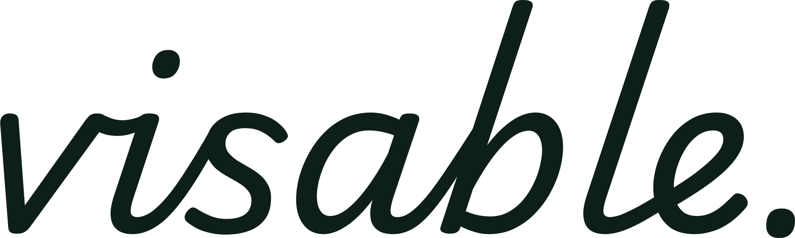

검색
코드, 키워드, 상황 설명 중 가능한 방식으로 시작합니다.

비자 코드, 절차 이름, 지금 상황을 그대로 입력하세요.
맞는 도구가 없어요. 다른 이름으로 검색하거나 전체를 선택해 보세요.
공식 안내 원문과 체류자격별 안내를 함께 검색할 수 있습니다. 각 결과의 기준일과 적용 범위를 확인하고, 신청 전 공식 기관에 문의하세요.
2026년 10월판 공식 안내 원문은 검색용으로 반영되어 있고, 일부 항목의 내용 검토는 별도로 진행 중이에요. 구조화된 안내에는 각 근거의 기준일이 함께 표시됩니다.
HiKorea · 원문 보기
Visable · 비자·체류 안내
내 상황을 입력하면 필요한 서류·다음 절차·확인할 공식 출처를 정리해 드려요.
필요한 기능으로 바로 이동하세요.
해외에서 재외공관을 통한 사증(비자) 신규 발급 절차
외국인등록, 체류기간 연장, 자격 변경 등 국내 체류 민원
이 서비스는 공개 법령·매뉴얼을 바탕으로 한 참고용 정보 제공 도구이며, 법적 상담이나 민원 대행이 아닙니다. 최종 판단은 출입국·외국인청, 하이코리아, 또는 자격 있는 전문가에게 확인하세요.
Powered by Club Paradiso. All rights reserved.
체류자격 분류
목적별로 정리된 체류자격을 살펴보고, 출처를 확인하며 다음 단계를 준비할 수 있습니다.
서식 작성
출입국 민원에 자주 쓰는 공식 서식을 모았습니다. 온라인으로 작성한 뒤 인쇄하거나 PDF로 저장하고, 원본 한글(HWP)·워드 파일은 HiKorea 공식 서식 자료실에서 받을 수 있습니다.
외국인등록·연장·자격변경·재입국 등. 재외동포(F-4)는 국내거소신고서로 분기됩니다. 정본 위에 입력값을 얹어 PDF로 저장하세요.
온라인으로 작성하기 → 공식 다운로드그 외 신청서·신고서 원본 파일은 HiKorea 서식 자료실에서 내려받아 작성하세요.
HiKorea 자료실 열기 ↗작성을 마치면 브라우저 인쇄 기능으로 종이에 출력하거나 'PDF로 저장'을 선택하면 됩니다. 입력 내용은 내 브라우저에만 머뭅니다.
서식 작성 도우미는 참고용이며 제출·접수를 대행하지 않습니다. 최신 서식 여부는 HiKorea에서 확인하세요.
매뉴얼 안내
출입국·외국인정책본부가 공개한 매뉴얼과 시행 안내를 참고용으로 구조화했습니다. 결과 화면에 표기된 출처를 확인한 뒤, 최종 판단은 HiKorea, 1345, 관할 출입국기관에서 확인해 주세요.
외국인 등록, 체류기간 연장, 자격 변경 등 국내 체류 절차의 공개 매뉴얼.
재외공관 사증 발급, 비자 신청 절차 안내의 공개 매뉴얼.
출입국관리법, 시행령, 시행규칙과 공개 서식을 교차 확인합니다.
입국 후 체류 안내, 전자민원과 방문예약은 HiKorea에서 확인하세요.
입국 전 사증 유형, 가능한 전자신청 경로와 신청현황을 공식 포털에서 확인하세요.
출입국·체류 민원과 관할기관 연결이 필요할 때 공식 다국어 상담 창구를 확인하세요.
위 매뉴얼 링크는 HiKorea가 공개한 최신본(사증발급 2026-10-19, 외국인체류 2026-11-02 안내매뉴얼)으로 연결됩니다. 화면의 구조화된 안내는 읽을 수 있는 사증 2026.10·체류 2026.11 공식 PDF 추출본으로 출처를 갱신했습니다. 재외공관별 추가서류와 접수 방식은 공관마다 다를 수 있으므로 실제 신청 전 관할 재외공관 공지를 확인하세요. Visable은 법무부·HiKorea·비자포털·재외공관과 제휴 또는 소속 관계가 없는 참고 서비스입니다.
목적별 경로
같은 체류자격도 목적과 시점에 따라 필요한 확인 순서가 달라집니다. 아래 경로는 기존 검색 결과로 이어지는 안전한 출발점이에요.
이용 순서
코드, 키워드, 상황 설명 중 가능한 방식으로 시작합니다.
유사한 자격과 절차를 나란히 보며 차이를 좁힙니다.
자격별 구비서류 흐름을 살펴보고, 공식 출처 확인으로 이어집니다.
하이코리아, 1345, 관할 출입국 안내로 최종 확인합니다.
지원 도구
이미 구현된 도구는 기존 모달과 검색에 연결하고, 아직 준비 중인 기능은 계획 상태로 표시해요.
비자와 체류 — 여러 곳에 흩어진 절차와 서류를, Visable은 목적별로 정리해 보여주고 다음 단계까지 안내합니다.
‘비자(visa)’를 ‘보이게(visible)’, 그리고 ‘할 수 있게(able)’. 답이 보이고, 다음 행동까지 해낼 수 있는 한국생활을 위해.
대한민국에는 공식적으로 39가지 체류자격이 있지만, 관련 법령과 매뉴얼이 여러 곳에 흩어져 있어 정보를 찾는 데 시간이 걸립니다. Visable은 흩어진 비자·체류 정보를 구조화하여 사용자 입장에서 한 번에 살펴볼 수 있는 안내 흐름을 제공하고, 정보 비대칭을 줄이는 사용자 안내 레이어를 지향합니다.
정보를 나열하는 데서 그치지 않고, 구조화한 체류자격 데이터와 사용자가 입력한 내용을 바탕으로 안내해 정보 탐색 부담을 줄이고, 공식 자료 확인까지 자연스럽게 이어지도록 설계합니다.
아래 일정은 프로젝트 추진 계획이며, 공식 정책 일정이 아닙니다.